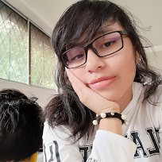

Introducción
Mi novia, Katheryn Salazar, una linda persona super importante en mi vida.
Te amo mucho
Mi princesa hermosa.
Ella es mi princesa

Mi novia, Katheryn Salazar, una linda persona super importante en mi vida.
Te amo mucho
Mi princesa hermosa.
Ella es mi princesa
Desde la perspectiva de: Kevin Changoluisa
Nuestra historia comienza en el año 2018 cuando nos encontrábamos en 10mo. La primera impresión que tuvimos fue un desastre debido a mi persona que de manera arrogante le quise corregir un 'Un error gramatical'. Nuestra historia continúa en primero donde me acerqué a ti para obtener información de Kleyn, solo por eso comenzamos a conversar y si pudiera cambiar algo sería haber conversado contigo sin otro motivo de por medio.
Como mencioné anteriormente en 1ro BGU comenzamos a conversar, y con el paso del tiempo nuestra amistad tuvo un giro nuevo, me comencé a enamorar de tu personalidad como no sabía expresarme si tuve comportamientos bien tontos me arrepiento de todo eso, no sabía como expresarte el como me gustabas...nos convertimos en amigovios No me acuerdo bien la fecha pero te besé...la verdad no sabía como reaccionar, me porté y dije cosas de las cuales me arrepentí...tú me gustabas. Nos hicimos novios...nuevamente no me expresé bien y así mismo tú tenías problemas y terminamos...pero regresamos...con el paso de los días llegó pandemia. Con el comienzo de la pandemia si fui un idiota completo mi pensamiento fue no estoy preparado para una relación a distancia y simplemente me alejé de ti sin decirte nada. En pandemia mientras pasaban los meses me di cuenta que si me enamoré mucho de ti...y me sentía super culpable e idiota por ya no hablarte...en serio deseaba hablarte y cuando lo hacía me cuestionaba si tenía el derecho de aún estar contigo...algo tonto. Bueno llegamos a 3ro aún me cuestionaba si debía estar contigo...cuando íbamos a regresar a presencial y las listas de los grupos indicaban que íbamos a estar juntos me emocioné estaba super feliz hasta que las cambiaron y en serio me decepcioné quería verte...así mismo pasó las semanas y ambos grupos se juntaron cuando te vi me dio algo no sabía como hablar contigo...la verdad yo me iba a sentar atrás tuyo pero...me ganó la culpa y me cambié...me di cuenta que te habías hecho amiga del Jose...me dio celos...tenía celos que otros se te acercaran ahí ya había aceptado que me gustabas y solo quería que fueras mía...me porté bien super mal contigo...si no hubiera sido por aquella borrachera...capaz y no te decía mis emociones...me arrepiento de no haber tenido el valor de decirte que me gustabas hasta casi perderte. Mi princesa te amo...sé que ahorita estamos de nuevo empezando pero espero que te quedes conmigo para siempre.
Entre los planes a futuro que una vez hicimos y quiero que se cumplan menciono algunos.
Voy a enlistar unas cuantas cositas que me encantan de ti mi amorcito preciosa
Mi amorcito tiene varias cualidades que la hacen resaltar mucho.
Mi amorcito a pesar de todo lo difícil que le suceda se vuelve a levantar... esta cualidad es una de las cuales me atrajo mucho
Su determinación, cuando se propone algo la puedes ver esforzándose al máximo...a mí me preocupa mucho porque a veces siento que se excede... amor cuídate mucho si?